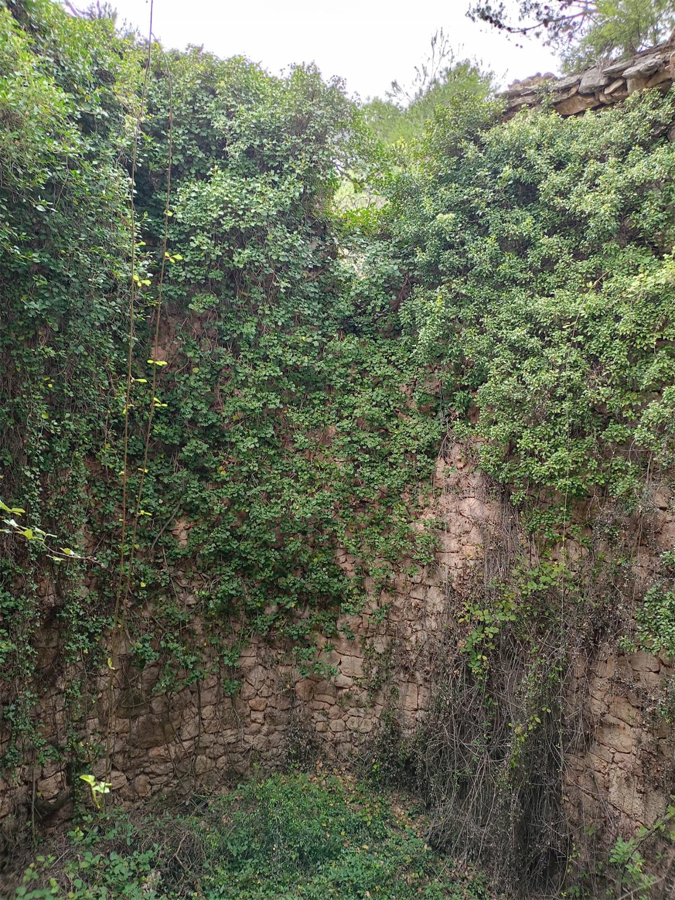

Cómo pulir muebles de madera: técnicas y consejos prácticos
Descubre cómo pulir muebles de madera correctamente, protege su belleza y aumenta su durabilidad con pasos simples, consejos clave y técnicas fáciles.
Últimos artículos
Publicamos recursos prácticos para que las empresas forestales entiendan y aprovechen la inteligencia artificial.
Descubre cómo pulir muebles de madera correctamente, protege su belleza y aumenta su durabilidad con pasos simples, consejos clave y técnicas fáciles.

Explora los escenarios económicos de Anthropic sobre la inteligencia artificial para 2030 y su impacto en el sector forestal español. ¿Está tu negocio...

Descubre las críticas de Michael Burry sobre el crecimiento de la inteligencia artificial y su impacto en el sector forestal español. Análisis y refle...

Descubre la advertencia del congresista Chip Roy sobre los riesgos de la inteligencia artificial y qué significa para el sector forestal español y la ...
El primer paso es un diagnóstico gratuito. Analizamos tu empresa y te decimos exactamente dónde la IA genera más impacto.
Solicitar diagnóstico gratuito